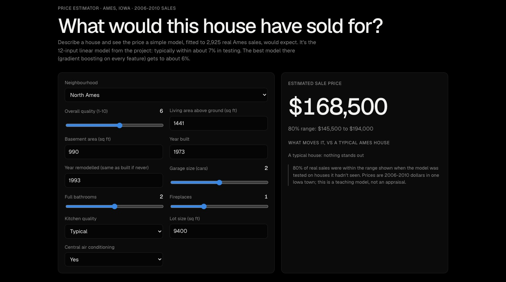
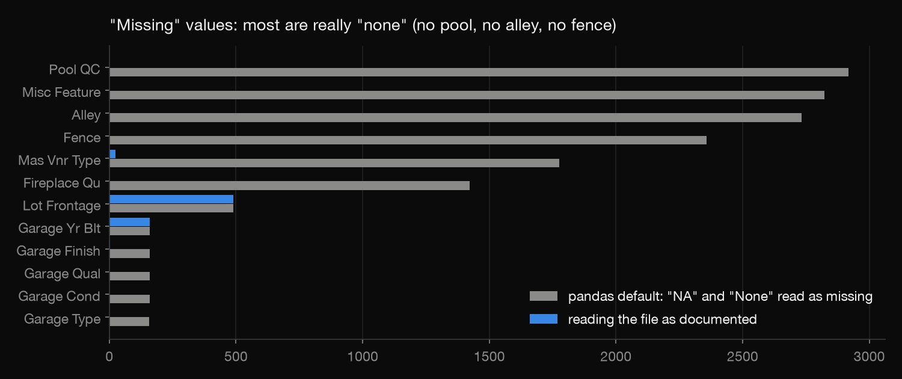
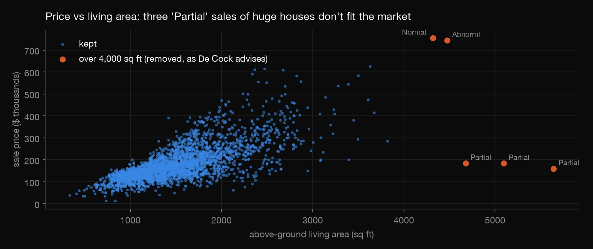

Python · Regression · 2026-10
Ames House Prices
Predicting what houses sold for in Ames, Iowa: exploration that caught a data trap and five bad sales, four models tested on a later year, and a price estimator you can use.

One Iowa town, 2006-2010 prices: a teaching model, not an appraisal. Uses De Cock's original 2,930-sale file; Kaggle's competition uses a 1,460-house subset of it.
01 — The problem
House-price prediction is a classic first regression project, and the modelling is the easy part. The hard part is the exploratory work that decides whether the model can be trusted. What does the data actually say, which rows don't belong, and how close can a model get to real sale prices, including in a year it never saw?
02 — What I built
A Python project on Dean De Cock's Ames housing data (2,930 sales, 82 columns):
- Exploratory analysis that found a reading trap and five sales that don't reflect the market.
- Four models, from a neighbourhood-median rule of thumb to gradient boosting, all predicting log price.
- Two tests: 10-fold cross-validation, and a time test that learns on 2006–09 and predicts 2010.
- A browser price estimator that runs the 12-input linear model in your browser.
03 — How it was built
- 01
Read the documentation before the data
In this file
NAmeans "none" (no pool, no garage, no basement), andNoneis a type of brick veneer. pandas' default reader turns both into blanks. That's 15,749 "missing" cells, of which only 719 are genuinely unknown. Reading the file as documented keeps "no pool" as information instead of a hole to fill.
pd.read_csv(path, sep="\t", keep_default_na=False, na_values=[""]) - 02
Find the sales that don't belong
Plot price against living area and five houses over 4,000 sq ft stand apart. Three are "partial" sales of huge new houses at about $160–185k: not market prices. The dataset's author recommends removing all five, and they're dropped.

- 03
Model log price, compare fairly
Prices are skewed (median $160,000, mean $180,412), so every model predicts the logarithm, which makes errors read as percentages. Four models are compared on the same 10 folds: neighbourhood median, a 12-input linear model, ridge regression on every feature, and gradient boosting. Then the real test: learn on 2006–09 and predict the 339 sales of 2010.
- 04
Ship a model people can use
The 12-input linear model is within a point and a half of the best model and small enough to run in a web page. Its coefficients go into a JSON file, and the estimator rebuilds the prediction in JavaScript. The 80% range comes from the model's own cross-validated errors.
check.pyproves the browser formula matches the fitted model on all 2,925 houses.
04 — Results
| Model | Typical error (CV) | Within 10% | 2010 sales |
|---|---|---|---|
| Neighbourhood median | 14.3% | 38% | 15.0% |
| Linear, 12 inputs | 7.1% | 65% | 7.2% |
| Ridge, all features | 6.3% | 71% | 6.5% |
| Gradient boosting | 5.7% | 72% | 5.9% |
- The best model is typically off by about 6%, and it held up on 2010 sales it never saw.
- Size, quality and location drive price: total square footage, overall quality, then neighbourhood.
- The street name alone is off by 14%, a reminder of what the features add.
05 — What I'd do next
- Prediction intervals from the gradient-boosting model (quantile loss) for the estimator.
- Compare with assessed values from the Ames Assessor.
- A spatial model using neighbourhood boundaries instead of names.